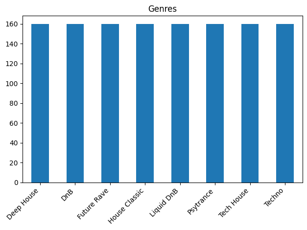
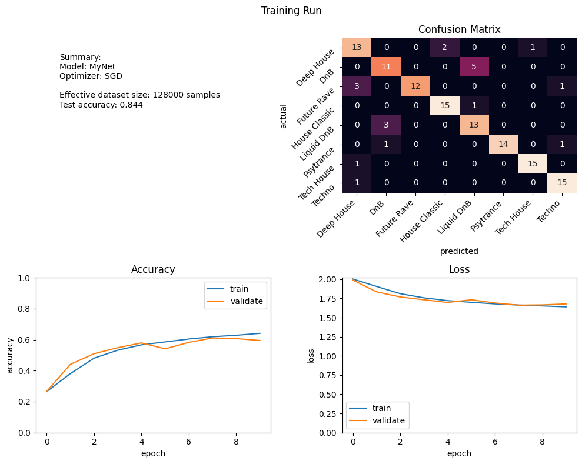

%reload_ext autoreload
%autoreload 2
from pathlib import Path
from mgclass import analysis, MusicGenreDataset, networks
from mgclass.utils import *
from mgclass.training import TrainingRun
dataset = MusicGenreDataset(
data_dir=Path("/home/georg/Music/ADL/"),
preprocess=create_spectrogram(win_length=2048),
file_transform=mp3_to_wav_location,
playlist_to_genre=sample_playlist_to_genre,
transform=create_crop((128, 128)),
dry_run = dry_run
)
analysis.summarize_dataset(dataset)
Using genre from playlist source
Clamping dataset to 160 songs per class. Removing 279 songs.
Preprocessing complete
Creating dataset: 0%| | 0/1280 [00:00<?, ?it/s]
mean: tensor([[[31.1943]]]), std: tensor([[[293.4358]]])
Dataset creation finished in: 108.7538 seconds

model = networks.MgcNet(dataset.num_classes)
run = TrainingRun(dataset, model, batch_size=128, epochs=epochs, dry_run=dry_run, repeat_count=repeat_count)
run.start()
run.test()
run.plot()
0%| | 0.00/10.0 [00:00<?, ?epochs/s]
Starting training for 10 epochs
Epoch 1/10, train_loss: 2.003, train_acc: 0.265, val_loss: 1.989, val_acc: 0.266, in 93.44s
Epoch 2/10, train_loss: 1.906, train_acc: 0.381, val_loss: 1.835, val_acc: 0.441, in 90.02s
Epoch 3/10, train_loss: 1.812, train_acc: 0.481, val_loss: 1.769, val_acc: 0.509, in 94.53s
Epoch 4/10, train_loss: 1.758, train_acc: 0.532, val_loss: 1.732, val_acc: 0.548, in 88.83s
Epoch 5/10, train_loss: 1.721, train_acc: 0.566, val_loss: 1.697, val_acc: 0.579, in 91.00s
Epoch 6/10, train_loss: 1.699, train_acc: 0.585, val_loss: 1.733, val_acc: 0.541, in 94.76s
Epoch 7/10, train_loss: 1.679, train_acc: 0.604, val_loss: 1.690, val_acc: 0.583, in 94.91s
Epoch 8/10, train_loss: 1.663, train_acc: 0.619, val_loss: 1.662, val_acc: 0.611, in 94.97s
Epoch 9/10, train_loss: 1.653, train_acc: 0.628, val_loss: 1.666, val_acc: 0.607, in 93.71s
Epoch 10/10, train_loss: 1.640, train_acc: 0.641, val_loss: 1.679, val_acc: 0.595, in 94.20s
Training finished in: 930.3792 seconds
test_loss: 1.614, test_acc: 0.844
